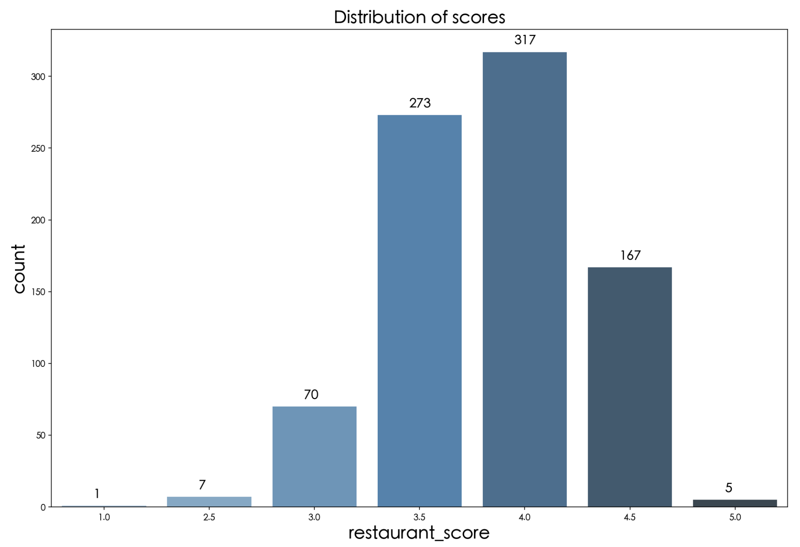
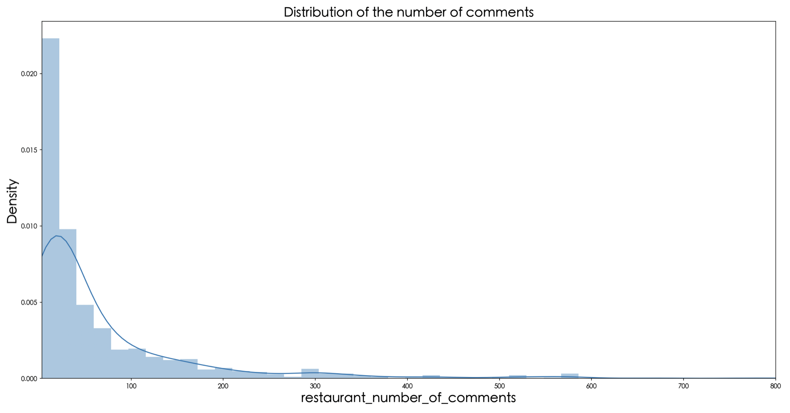
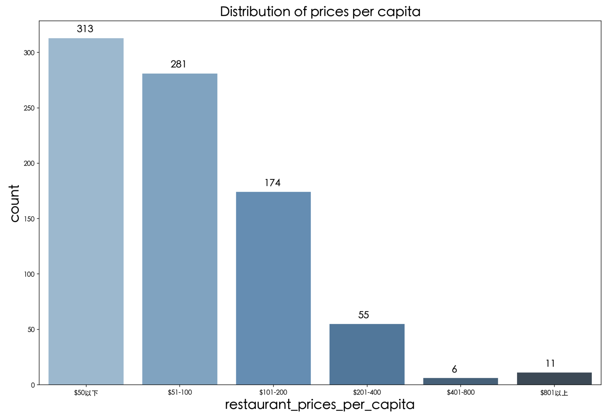
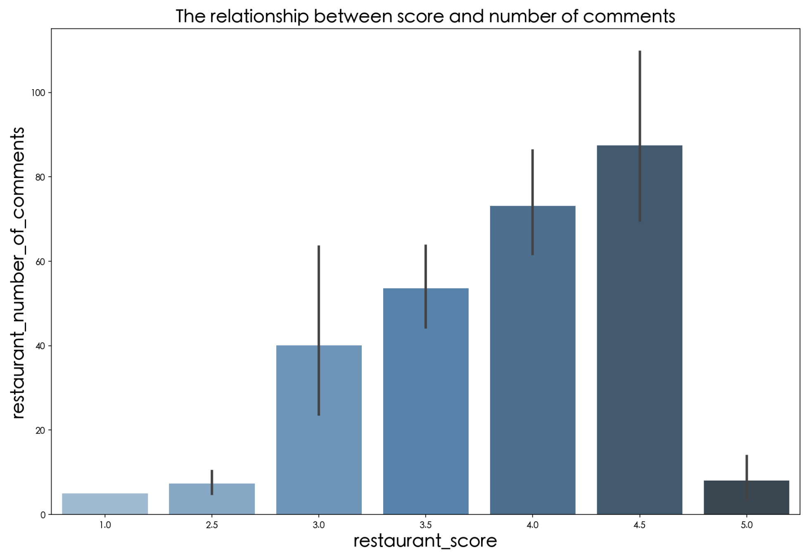
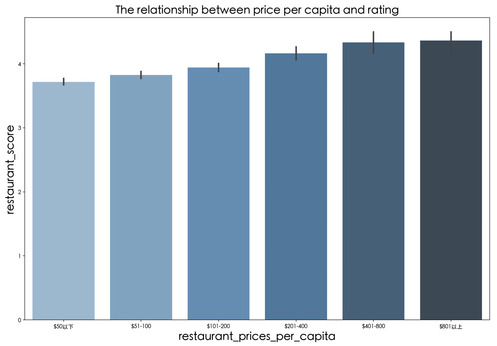
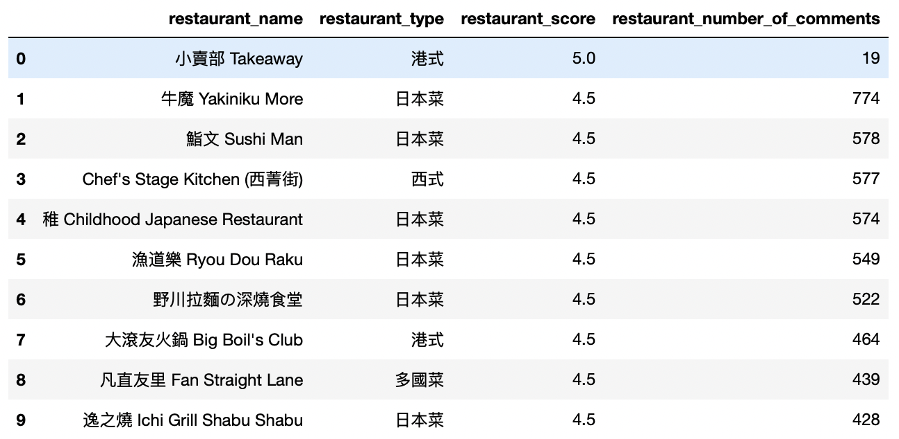
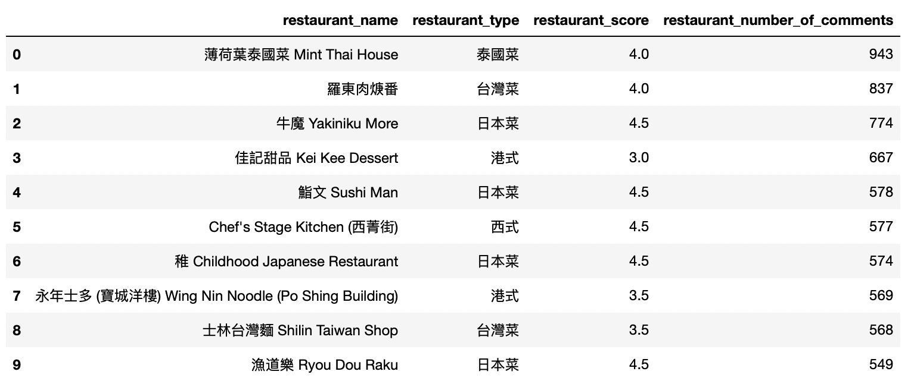
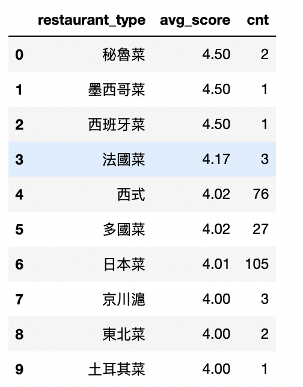

Analysis of restaurants in Yuen Long District
This data analysis report is based on 1040 data scrapped from Openrice. After the process of removing duplicate values and nulling, there are 840 pieces of valid data. The data visualization is realized by python, and SQL performs data analysis.
1. How are the ratings, number of reviews and price per capita of restaurants in Yuen Long District distributed?
(1) Distribution of scores
The restaurant ratings are mainly concentrated in 3.5 and 4 points; these two score groups account for 74.4% of the overall. It roughly follows a left-skewed normal distribution. The data reflects that most restaurants can basically meet users' expectations and reach the average score.
(2) Distribution of the number of comments
The number of restaurant reviews is mainly concentrated in the range of 0-300, with a few in the range of 300-600. Compared with the mainland public reviews, the average number of reviews in the range of 1000-2000 reflects that Openrice has room for improvement in motivating users to comment.
(3) Distribution of price per capita
The price per capita and the number of corresponding restaurants are roughly inversely proportional. The lower the price per capita, the more restaurants there are. The higher the price per capita, the fewer the number of restaurants. This is also in line with our intuition that restaurants with high per capita prices are suitable for a small number of people and a small number of scenarios, so the number is low. The restaurants with less than 100 per capita, which account for 75% of the total number of restaurants, are the daily consumption places for the general public.
2. For the restaurants in the Yuen Long district, what is the connection between the rating and the number of reviews?
The maximum number of reviews for restaurants with 1, 2.5 and 5 points did not exceed 20. The number of reviews is too small, so the individual reviews produce a significant effect, making the reference of the rating questionable. In the 3-4.5 range, on the other hand, it can be seen that the number of people's reviews is directly proportional to the restaurant's rating. The higher the rating of a restaurant, the more likely it is to motivate consumers to go for it. More consumers mean more possibility of reviews.
3. For restaurants in the Yuen Long district, what is the connection between rating and price per capita?
The figure shows that price per capita and restaurant rating is directly proportional. The higher the price per capita, the higher the restaurant rating. The lower the price per capita, the lower the rating of the restaurant. This reflects the high rating of the restaurant, the high demand in service, environment and taste, which brings a good experience to diners. The restaurants with low price per capita usually have lower costs, so they spend less on decoration and service than the high per capita consumption restaurants, and their ratings are not as good as the high per capita consumption restaurants.
4. What are the highest-rated and most-reviewed restaurants in Yuen Long?
The result is obtained by sorting the data using the order by statement in SQL.
Top 10 rated restaurants in Yuen Long District.
Top 10 restaurants in Yuen Long District in terms of number of comments
5. What are the most popular types of restaurants in Yuen Long District?
Summary
By looking at the TOP10 restaurants with the highest ratings and reviews, we can see the preference of consumers for Japanese food in Yuen Long District. Among the ten highest-rated restaurants, there are 6 Japanese restaurants. Among the ten restaurants with the highest number of reviews, there are 4 Japanese restaurants, all of which are among the ten highest-rated restaurants. This also validates the conclusion obtained in our visualization that stores with high ratings also tend to have a higher number of reviews (except for extreme values). In fact, Japanese food is also ranked 6th among the most popular types of restaurants in Yuen Long District. Although Spanish, Peruvian, and Mexican cuisine are in the top 3, they all have only one or two stores. Japanese cuisine, on the other hand, has 105 stores and stands out in the ranking.